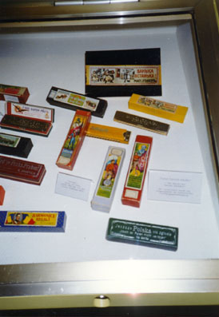
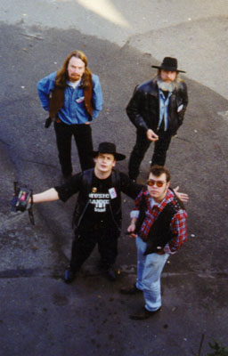
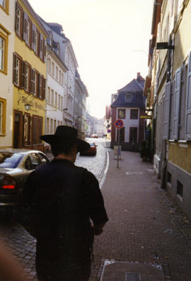
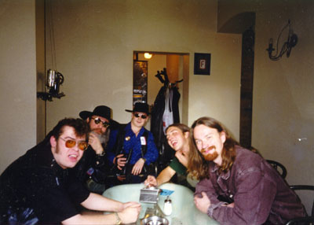
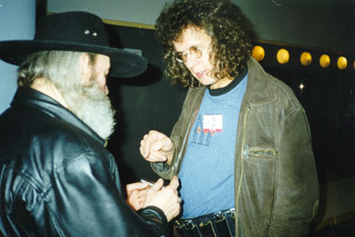
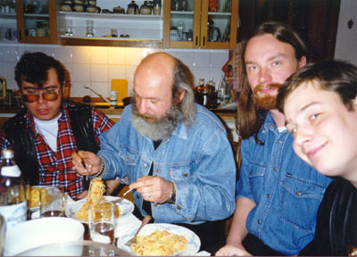
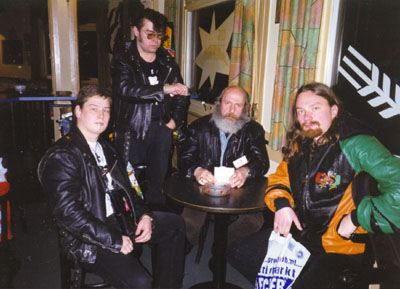

 |
Модель "Ванька-встань-ка" в экспозиции музея губных гармоник Hohner |

Нужно побывать в Троссингеме, чтобы убедиться, насколько серьезные страсти кипят вокруг губной гармоники. Любителю кантри и блюза место, которое этот инструмент занимает в музыкальной экологии, кажется вполне очевидным.У губной гармоники богатая предыстория, уходящая через древний Китай и Египет в пещеры каменного века к попыткам заставить свистульку звучать на разные лады. Но в цивилизованной Европе инструмент, который уже можно считать собственно губной гармоникой, появился примерно два-три столетия назад в качестве детской игрушки под названием “губной органчик” - несколько “гудков” соединенных последовательно по высоте звука. “Губной органчик” перестал быть просто детской игрушкой, когда пришла пора обживать Новый свет. Верный спутник ковбоев в диких прериях и рабочих на хлопковых плантациях, гармоника не занимала много места в кармане, а настроение поднимала значительно.
Ковбои и хлопкоробы, лесорубы и дорожные строители сделали губную гармонику своим народным инструментом только за то, что она могла и плакать и смеятся вместе с ними. В кантри и в блюзе нужен был инструмент, не требующий дорожного футляра.
Однако в Европе все еще теплятся надежды одеть гармошку во фрак и отправить в академии – не профессором, так хотя бы деканом.
 |
узкие улочки... |
И если бы не эти мечты, скромный германский городок Троссингем был бы только еще одним спальным районом современной Европы. Но в Троссингеме расположена штаб-квартира фирмы Honner - крупнейшего и авторитетнейшего производителя гармоник в мире. И раз в год сюда съезжаются виртуозы игры на гармонике со всего мира - принять участие в конкурсе-фестивале. Конкурс проходит со всей академической строгостью - по девяти категориям. И для хроматической гармоники включает в себя исполнение обязательной программы.
В прошлом году “Хоннер” проздновал столетний юбилей своей самой популярной модели - “Marine Band”. Отмечали его по всему миру, в Москве в его проведении принимала участие фирма “Music Hammer”, а явный фаворит юбилейной программы: Михаил Соколов, известный и любимый в московских блюзовых кругах просто как “Петрович” – отправился при содействии “Мьюзик Хаммер” в Троссингем на разведку боем.
ПЕТРОВИЧ: Мне удалось принять участие в трех номинациях по диатонической гармонике: джаз-мелоди, кантри-фолк, и блюз-рок. Во всех номинациях я получил оценку VERY GOOD (Очень хорошо). Это было очень интересно. Для меня это было вообще событие исключительное, потому что, я вообще впервые был за границей, в силу того, что в застойные годы я являлся вообще невыездным, и теперь я имел возможность посмотреть, как это происходит там, пообщаться с очень интересными музыкантами, и побывать на концертах таких музыкантов, как Жан-Жак Мильте, Стива Бейкера и Криса Джоунса, далее Дитера Крупа и Пола Лэмба. И это был зверский толчок, в том смысле, что мне зверски захотелось заниматься, мне очень захотелось двигаться вперед, мне захотелось как можно больше играть.
 |
| Слева направо: Николай Второв Михаил Петрович Соколов Александр Гречанинов Daniel (our driver) Николай Садиков |
Побывав на первом фестивале я уже знал совершенно точно, что моя задача заключается в том, что я на следующий год обязательно должен побывать в Троссингеме на следующем фестивале. Для этого было сделано много, и самое интересное то, что в этом году нам удалось выехать туда не мне лично, а такой достаточно представительной группой, включая меня, весь состав группы “Мьюзик Хаммер Бэнд”, а так же нашего горячо любимого журналиста и блюзоведа Андрея Евдокимова, который нас повсюду сопровождал. Фестиваль этот меня менее поразил, чем предыдущий, хотя он был мировой фестиваль, но по представительности он был послабей. Во всяком случае, в плане концертов, за исключением Аби Валенштайна и Стива Бейкера, а так же Ховарда Леви - особых звезд я там не видел, к сожалению. Но в любом случае фестиваль был интересен. Я очень рад, что нам удалось принять участие не столько в конкурсной программе, где мы завоевали, в отличие от предыдущенго приезда, нам удалось получить оценку Exelent (отлично), но и дать небольшое выступление в клубе “Канапе”, где проводились джейм-сейшин для участников фестиваля... А в конкурсе есть еще один балл, который называется outstanding. Я очень надеюсь, что если мы в третий раз попадем в Троссингем, когда-нибудь мы доберемся до outstanding.
ЕВДОКИМОВ: Теперь, став почти завсегдатаем Троссингема, как ты оцениваешь этот фестиваль?
 |
Петрович и Славомир Вершольский (группа NOCNA ZMIANA BLUESA, а также ведущий блюзовых программ Польского Радио) |
ПЕТРОВИЧ: Фестиваль мне вообще показался достаточно странным. Если в первый раз я смотрел на все широко раскрытыми глазами, и всему удивлялся, всему радовался, то второй раз побывав в Троссингеме, я как-то немножечко более скептически отнесся ко всему происходящему там, и меня, конечно, поразило вот это вот совершенно фанатичное желание доказать всему миру, что губная грамоника - это инструмент, на котором можно играть все буквально. И профессора, которые там в белых пиджаках выходят на сцену с губной гармошкой, и так же совершенно спокойненько ошибаются в нотах... Но здесь дело даже не в этом. Для меня кажется странным исполнение Сонатины e-mol губная гармоника в сопровождение струнного квартета. Это не место этому инструменту. Губная гармоника - великолепный инструмент, прекрасный инструмент, который имеет свои ниши, которые он должен занимать: это блюз, джаз, кантри, фолк... Вот, пожалуй. Ну, может быть, там фанк, или джаз-рок - да, это все может делать губная гармоника. Но когда дело касается классический произведений... Я не буду углублятьс в технические характеристики этого инструмента но... Такое впечателние, что здесь путали божий дар с яишницей. Губная гармоника - великолепный инструмент, но не для классики. Это не ее амплуа.
В прошлом году выходят на сцену трио гармонистов, которые исполняют “Танец с саблями”. Состав у них такой... Они во фраках, очень симпатичные молодые люди, один держит в руках огромную полуметровую гармонику аккордную, другой держит в руках басовую гармошку, тоже гигантского размера. И посередине стоит очень худенький человек во фраке, который держит в руках хроматику (хроматическую губную гармонику). И вот они втроем играют танец с саблями, играют чисто, играют хорошо. Но когда я отвернулся от сцены, я вдруг понял такую вещь - то же самое может сделать один аккордеонист. Какой смысл в существовании такого коллектива?! Я не знаю. Я думаю, что фирма Хоннер специально подогревает фанатизм вокруг губной гармоники, потому что они, видимо, преследуют свои финансовые интересы.
 |
Спасибо, Пашка, за макароны! |
ЕВДОКИМОВ: Не только трио - квинтеты и секстеты, делящие зарплату аккордеониста, выступали в этом году в конкурсных и показательных программах фестиваля, удивляя по-немецки скрупулезной отлаженностью ансамблевой игры. Секстет “Harmonicamento” из Германия, добившийся в конкурсе оценки Outstanding, действительно демонстрировал нечто выдающееся по созвучую шести гармоник: от двух хроматик до бассовой и аккордой. Е-mol-ную сонатину исполнял уникальный виртуоз хроматики, японец Yasuo Watami, являющийся ныне профессором Троссингемской консерватории губной гармонки. И это был единственный музыкант “фрачной” части программы, кто действительно играл академически чисто. На мой взгляд, его звук вливался тонко и естественно в прозрачную атмосферу струнного квартета, наигрывавшего минималистические напевы. Имеено это исполнение было и удачным и несомненно интересным; а союз хроматической гармонки, на которой играют со скрипичной виртуозностью, со струнным квартетом звучал столь органично, на порядок более естественно чем другие сочетания духовых с небольшим струнным ансамблем, что не казался экспериментом. Но другие попытки играть по нотам дуэты губной гармоники и фортепиано казались попыткой одеть гармонику - рабочий инструмент - во фрак. Попытка тем более неуклюжая, что профессора частенько “лажали по черному”, что неприлично для консерватории. Но, может быть, это часть попытки вывести в свет новую модель “Хоннера” - хроматическую гармонику “Meisterklasse”. Стоимостью почти в полштуки баксов, она грезится “хоннерам” конкурентом “Grandpiano” “Стейнвея”!
ПЕТРОВИЧ: Я сам музыкант, я сам играю на губной гармошке, я влюблен в этот инструмент, но я ни в коем случае не собираюсь превозносить ее до небес. Есть и более богатые инструменты по возможностям и по красоте звука... Губная гармошка - это есть губная гармошка. У нее - своя аура!
ЕВДОКИМОВ: ?
ПЕТРОВИЧ: Есть такая школа, которая называется “Harmonica - It’s Easy” - “Гармоника - это проосто”. Да, действительно, губная гармоника очень проста на начальном периоде обучения. Т.е. взять губную гармошку и сыграть первую ноту - совсем не трудно. Куда труднее это сделать на скрипке. Губная гармошка проста. Но чем дальше ты идешь, тем она становится все сложнее и сложнее. И если ты ставишь перед собой большие задачи, сложные задачи, тем сложнее искать пути их выполнения. На первом этапе обучения губная гармоника - она очень податливая. Дальше она начинает артачиться. Дальше ты начинаешь сталкиваться с такими нюансами, как нехватка дыхания, точность игры бэнда, и вообще чистоты исполнения. Потому что бэнд - это приблизительно то же самое, что мы можем сделать на скрипке, на безладовом инструменте - глиссандо. Таким образом мы можем плавно повысить или понизить звук. На губной гармошке это делается языком. Но это надо точно делать, если чуть-чуть, как говорится, перетянул, то уже фальш, уже грязь. Прекрасно, когда ты начинашь чувствовать, что этот инструмент тебя слушается, но он очень трудно объезжаемая лошадка В общем инструмент этот, конечно, серьезный, с одной стороны, но я буду настаивать на своем - не для классики.
ЕВДОКИМОВ: А скажи-ка, совпадение названий фирмы с вашей группой - это такая вроде бы случайность?
ПЕТРОВИЧ: Этот состав появился немногим больше года тому назад с названием “Петрович Блюз Бэнд”. Потом мы познакомились с фирмой “Мьюзик Хаммер”, с Дмитрием Алексеевым. Фирма “Мьюзик Хаммер” занимается продажей в Москве губных гармоник, и не только губных гармоник, но и других музыкальных инструментов. Мне удалось с Алексеевым договориться о неком покровительстве. Я не могу сказать, что они являются какими-то полными спонсорами моего проэкта, нашего состава. Нет, Мьюзик Хаммер просто в силу возможностей нам помагают во многом: в приобретении инструмента, дают нам рассрочки, хорошие скидки. И это очень приятно, и самое главное, что сотрудничество находится у нас на обоюдовыгодных условиях, где-то мы можем помочь, где-то нам помогают. Я ведь прекрасно помню времена, когда в Москве любой приличный инструмент достать было трудно, практически невозможно. Теперь в магазинах “Мьюзик Хаммер” можно найти все, что пожелаешь, или заказать по каталогу, если уже хочешь нечто особенное. Мне мой первый набор гармоник привез знакомый из заграничной поездки.
ЕВДОКИМОВ: Ты 25 лет барабанил, участвовал во многих славных коллективах. Я помню, на фестивале “Блюз в России”, выступая со “Старой Гвардией” впервые увидел тебя с губной гармоникой. Ты вышел из-за барабанной установки к микрофону и соло на гармонике завершил уже под гром оваций!
ПЕТРОВИЧ: Ну, это была не игра... Я начал пытаться что-то такое играть на губной гармошке еще когда играл в группе “Окно”, а это было лет десять назад. Нет, я веду отсчет не отсюда. Я веду отсчет с группы Stainless Blues Band, где я уже окончательно простился с барабанами, и где я уже впервые вышел на сцену как “губной гармонист”, и что я мог тогда делать? Фактически ничего не мог делать, фактически ничего не мог играть на этом инструменте. Через год было лучше, потом еще через год было еще лучше. Сейчас я уже могу сказать то, что я уже играю на этом инструменте что-то. Четыре года спустя. А то, что было до этого, периодические выходы на джем-сейшинах, я это не считаю. В то время у меня и гармошек-то не было. Подарят мне какую-нибудь, полузадутую, я на ней выйду где-нибудь, подудю. А серьезно я вот начал заниматься только вот пять лет тому назад.
ЕВДОКИМОВ: О как!
ПЕТРОВИЧ: В детстве я учился играть на скрипке. Но выбрал для себя барабаны - я 25 лет на барабанах проиграл. По выслуге лет я вышел в отставку. Постольку я смолоду занимался блюзом, волей-неволей, мы играли все время блюз. Даже когда я сидел в ресторане, все равно мы играли блюз. Блюз мы играли всегда. И всегда мне хотелось, чтобы кто-нибудь в группе играл на губной гармонике, так мне нравился звук этого инструмента. Алик Микоян - вот он, как бы, один из первых в Москве взял губную гармоники, и тогда у него еще не было блюзовой гармошки, и он из какой-то гэдээровской гармошки сам переклепывал, делал губную гармонику диатоническую, вот именно такого блюзовго характера. Мы, группа “Удачное приобретение”, это был первый в Москве состав, где человек играл на губной гармошке, это было вот 25 лет тому назад. И было потом много попыток делать какие-то коллективы, блюзовые, и все время мне хотелось, чтобы была губная гармошка. А потом мне просто надоело ждать, я попросил моего друга, чтобы он мне привез губные гармошки и научился сам. Научился сам и буквально влюбился в этот инструмент. Потому что за барабанами я не мог разговаривать с публикой, теперь я стал солистом, теперь я очень много беру на себя, я очень большую ответственность чувствую, и за себя, и за весь коллектив. И самое главное то, что я чувствую, вне зависимости даже от контингента публики, которая находится в зале, я зацепляю слушателя своей игрой, мне это нравится, мне это доставляет удовольствие. И я не буду говорить каких-то таких фраз, что я пытаюсь разговаривать с Богом, или что-то там такое подобное... Но на самом деле инструмент этот демонический, конечно, губная гармошка... Он может и плакать, и рыдать, и смеяться-веселиться, он может играть бешенные арпеджио, он может тянуть ноты, загибать ноты, вибрировать - ну все, что угодно. Богатейший инструмент. Я еще не до конца познал все возможности этого инструмента - но стремлюсь к этому.
Я думаю, что со временем я узнаю больше
ЕВДОКИМОВ: Правда ли, что Music Hammer Band начался с того, что Коля Садиков подошел к тебе с просьбой поучить его играть на гармоние?
 |
"Пора!" - сказал Коля Второв. |
ПЕТРОВИЧ: Сейчас расскажу. Садиков подошел ко мне в блюз-клубе и сказал: ”О, вы так хорошо играете на губной гармошке, можно мне у вас поучиться?” Я не каждого приглашаю к себе домой, но этот парень произвел на меня впечатление приятное, я не нашел в себе силы ему отказать, я ему сказал:”Хорошо, приходи. Вот тебе мой телефон. У тебя гармошки есть?” - ”Да, у меня гармошки есть.” Он пришел - где-то дня через два он мне позвонил, пришел ко мне с гитарой. Когда он открыл чехол, я увидел там National гитару. В общем-то, еще будучи гармонистом из группы Stainless Blues Band (Она и сейчас существует - это довольно-таки электрический состав, такой тяжелый коллектив в смысле звучания музыкального. Я бы их охарактеризовал как хард-рок-блюз-коллектив), мне хотелось сделать что-то аккустическое. Мне всегда хотелось поиграть с человеком у которого есть такая гитара. Тем более, что я сам делал такие гитары, стремился сделать такой инструмент. И тут приходит человек с такой гитарой. Тут уже было совершенно забыто то, ради какой цели он пришел ко мне (Хотя чего-то там я ему показал). Самое главное, когда он достал эту гитару, мы с ним попытались играть вместе. И тут я понял, что этот мальчик, он, конечно, еще сыроват, но он именно на том пути находится, на котором, мне кажется, он должен был идти. Это так хорошо было. Я понял, что это тот человек, которого я давно искал. И мы начали с ним репетировать и пытаться делать какие-то вещи дуэтом. Ну а дальше уже чисто коммерческие цели мы стали преследовать, потому что ну сколько мы сможем вдвоем играть? 3-4-5-10 песен - максимально сколько мы сможем удержать публику. На сольный концерт мы расчитывать не могли. Значит, нам нужен был еще человек. Вот нас трое оказалось, пришел Коля Второв, бывший контрабассистом группы “Бриолиновая мечта”. Следующий этап - пришлось признать, что надо все-таки барабаны что б были. “Давай, Петрович, садись за барабаны, играй одновременно на гармошке” - я еще на добро играл одновременно. В общем, некоторое время состав у нас просуществовал как трио, при том я там был и жнец, и на дуде игрец, и все такое. Это тоже оказалось трудно. Потому что я никак не мог на сцене сосредоточится, что мне делать дальше, потому что я играл на барабанах, в это время думал о том, “ах, счас я что должен сделать, слезть с барабанов, повесить на шею добро, подключить ее к усилителю, потом повесить на шею холдер, это такое крепление для губной гармошки, вставить туда гармонику до мажор, и играть такую-то песню, а еще текст не очень хорошо знаю, значит, я еще текст должен разыскать где-то”. Это кошмар был, концерт терял динамику. Потому что на эти бесконечные передвижения уходило время, и тогда было решено найти барабанщика. И вот появился у нас этот четвертый член коллектива, этот молодой паренек, Саша Гречанников. Он занял место барабанщика. Это было год назад осенью 1996.
ЕВДОКИМОВ: Значит, акустический дуэт разросся до полного квартета. Хотя это не было спланировано, но ваш квазиакустический состав выглядит очень оригинально, хотя, наверное, непросто “держать строй” ансамблю, в котором слайд-гитара, безладовый бас и блюзовая губная гармоника.
ПЕТРОВИЧ: Я все чаще начинаю говорить, что группа наша - это особая субстанция для Москвы и не только для Москвы. Как показал последний фестиваль в Тросснигеме, мы и там резко отличаемся от всех остальных... Хотя бы по манере исполнения, набору инструментов, используемых нами на сцене. Потому что, ну ты сам видел, сам можешь, сам знаешь, насколько стандартно играют там блюзовые музыканты, в основном - стандартно.
ЕВДОКИМОВ: С большим сожалением приходится признать, что электро-гитара, электро-бас и ударные становятся просто обязательным набором, словно это единственный вариант блюзбэнда.
И тут кстати вопрос о пропоганде губногармошечного дела. Как идут дела в московском харп-клубе?
ПЕТРОВИЧ: Этот клуб существует на бумаге уже полтора года. Он организован был при “Мьюзик Хаммере”. За полтора года, к сожалению, сменив несколько президентов, клуб не сделал ни одного шага. Сейчас мне предложено занять место президента московского харп-клуба. Я уже разработал устав этого клуба, и изо всех сил я хочу заняться этим делом. Здесь уже и дело чести. Передо мной открываются интересные перспективы в смысле работы. Этот клуб должен проводить ежегодные фестивали обязательные, и уже вот это, вот сама мысль о проведении фестивалей в Москве меня подстегивает к очень большой работе, и я думаю, что это будет очень интересное дело, если только не получится так, что чисто по-русски этот клуб рассыпется на кусочки, как это у нас бывает часто. Но я думаю, это во многом зависит от меня, потому что если это будет интересная работа, то народ, я надеюсь, не разбежится. Теперь, я думаю, этот клуб с самого начала будет называться не московским, а, может быть, интернациональным, может быть, международным, поскольку желание принять в его работе высказали уже и Питер, и Алма-Ата, и Украина.. Идея проведения в Москве фестивалей - то, на что меня натолкнул последний фестиваль в Троссингеме. Потому что самая большая радость, которую могут испытывать музыканты - это когда они общаются с интересными музыкантами, когда они могут пообщаться друг с другом, когда они могут немножко посоревноваться друг с другом, ну так, по хорошему, когда люди могут не на бумаге, и не на кассете, а воочию поприсутствовать на мастер-классе и спросить у того или иного человека, как и что он делает, каким образом ему удается достичь того или другого эффекта. И еще очень важная деталь - я не являюсь каким-то суперпатриотом, но я считаю то, что наши музыканты, московские, в частности, музыканты, владеющие губной гармоникой, к сожалению, их не так много, но они есть, вполне могут занять достойное место рядом с теми музыкантами, которые живут и работают там, за границей. Хотя многое будет зависеть и от финансов, конечно, но я думаю, нам удастся со временем сделать в Москве не только фестивали губной гармоники, а просто блюзовые фестивали, где будут еще и присутствовать какие-то конкурсные программы для гармонистов, гитаристов и тд, и т.п.
ЕВДОКИМОВ: Впереди большая административная работа! Да, кроме того, ты еще заправляешь музыкальной политикой клуба “Forte”, где всегда отличные блюзовые и джазовые программы. А как же группа?
ПЕТРОВИЧ: А как же без группы? Хочется репетировать, хочется делать новые вещи, пытаться что-то сочинять свое. Хочется, чтобы наш состав рос в профессиональном, техническом смысле. И хочется, чтобы он существовал как можно больше. Хотя у нас в составе есть разногласия, и даже, бывает, мы ссоримся иногда, ругаемся, но все это пустяки. Есть цель гораздо более высокая, ради которой можно наплевать на всякие разногласия, и я уверен в том, что этот состав просуществует долго. И есть планы такие: записать пластинку - и без наложений. То есть сесть в кружок, и сыграть все честно, как есть.